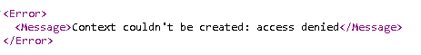

Introduction
Recently I have been played with Azure Web Apps, and its integration with SharePoint. In this post we will see how to provide Authentication to Web API REST actions using SharePointContext, which means that we only will be able to invoke our REST actions if we are behind the context of SharePoint Provider-hosted App.
It’s really easy and well documented to use SharePointContextFilter in a typical MVC project, but when you try to apply to Web API project, then is really tricky.
How SharePoint Context and Authentication works
When we want to provide SharePoint Context and Authentication into a normal MVC Web App, we should include the package called “AppForSharePointWebToolKit“ and this package will add to the project three files:
- Filters\SharePointContextFilterAttribute.cs
- SharePointContext.cs
- TokenHelper.cs
These files contain logic to have the SharePoint context in SharePoint apps that make use of Azure Access Control Services (Office 365) and High trust apps (SharePoint OnPremises).
In normal MVC projects that is ideal because once added this project, you only need to tag your action with [SharePointContextFilter] attribute:
1
2
3
4
5
6
7
8
9public class HomeController : Controller
{
[]
public ActionResult Index()
{
return View();
}
// more stuff
}
Note that SharePointContextFilterAttribute can be used to decorate complete controllers as well!
SharePointContextFilter attribute enforces the SharePoint context, we only can access to Index() if we are in the context of SharePoint Provider-hosted App. For example, when a user tries to visit directly the web, and has not been logged in using the SharePoint Site Content App Launcher (or similar) the user will not be allowed to enter. Moreover, if we go directly to the remote web using the query string parameter but didn’t login on this session, this SharePointContextFilter causes a redirect to the SharePoint site, to login to the site and when the user has been logged in, the user will be redirected back to the remote web. If the user can’t login, the context can’t be created and thus, the code within the action, won’t be executed. So, the SharePointContextFilter causes a redirect to the error page.
This approach sounds ideal to provide SharePointContext and Authentication mechanism as well.
The problem with SharePointContextFilterAttribute and Web API
If we are building a Web API project or Controller and we want to have the same approach we probably go for applying this solution as well (or try it):1
2
3
4
5
6
7
8public class HomeController : ApiController
{
[]
public HttpResponseMessage Get(string id)
{
// more stuff
}
}
But, we will realise that doesn’t work!
It’s not working because two main reasons:
ActionFilterAttribute
- Controller class WORKS fine with System.Web.Mvc.ActionFilterAttribute
- ApiController class DOESN’T WORK with System.Web.Mvc.ActionFilterAttribute
- ApiController WORKs with System.Web.Http.Filters.ActionFilterAttribute instead.
Web API (ApiController) is stateless component
- Which means that doesn’t have Session State.
- Which means that doesn’t have Session State.
My Solution
After lot of googling, the community have a couple of solutions:
- Bas Lijten: http://blog.baslijten.com/getting-sharepoint-2013-apps-and-webapi-to-work/
- Scot Hillier: https://www.itunity.com/article/managing-tokens-sharepoint-2013-singlepage-providerhosted-apps-445
I tried to apply both without success because my scenario is different. But I got some ideas to solve the problem for my scenario.
The approach
Change WebApiConfig.cs to enable Session State in Web API (same approach here).
Create a new filter called SharePointContextWebAPIFilterAttribute.cs behind Filters folder.
Notes in the above code:
- System.Web.Http.Controllers.HttpActionContext doesn’t have HttpContext object associated, so we will use HttpContext.Current instead inside OnActionExecuting when called CheckRedirectionStatus method from SharePointContextProvider class..
- System.Web.Http.Controllers.HttpActionContext doesn’t have Result property, we will use Response property to redirect and create Error response in the code.
Use SharePointContextWebAPIFilter instead SharePointContextFilter in our Web API actions:
Testing the solution is working properly
If we go directly to our REST Service: http://myapp.azurewebsites.net/api/mycustom/1
We will receive this error:
If we go to our SharePoint Provider-hosted app and we click on our App Launcher we will be redirected to login page and after that to an url like that: https://myapp.azurewebsites.net/home/index/?SPHostUrl=https%3A%2F%2Fmytenant%2Esharepoint%2Ecom&SPLanguage=en-US&SPClientTag=0&SPProductNumber=16%2E0%2E5625%2E1208&SPAppWebUrl=https%3A%2F%2Fmytenant-appguid%2Esharepoint%2Ecom&SPHasRedirectedToSharePoint=1
This isn’t our Web API, but is our gateway to login into Provider-hosted app. Once logged in, we can change the url “home/index” by our REST call, for example:
That should give you the information requested in the browser.
If we are logged in our SharePoint Provider-hosted app and we use F12 (Console) to make an ajax query:
If we use ajax we also need to include the query string (SharePoint context) in the call:
Using location.search will include all the parameters needed (thank for the tip Kev):
And here we have successful ajax query to our Web API REST call from our SharePoint Provider-hosted app page.
{kind=link}
{kind=link}
{kind=link}
Read more…